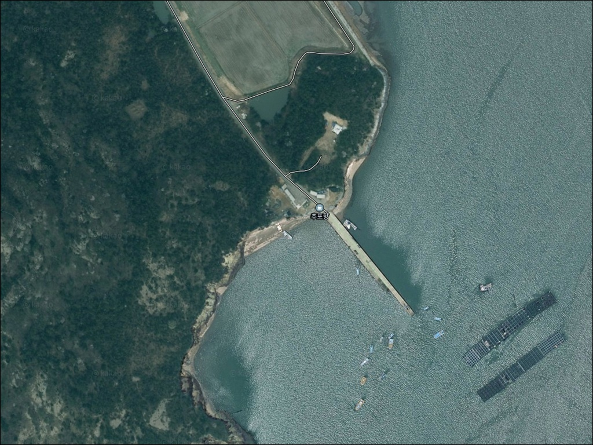
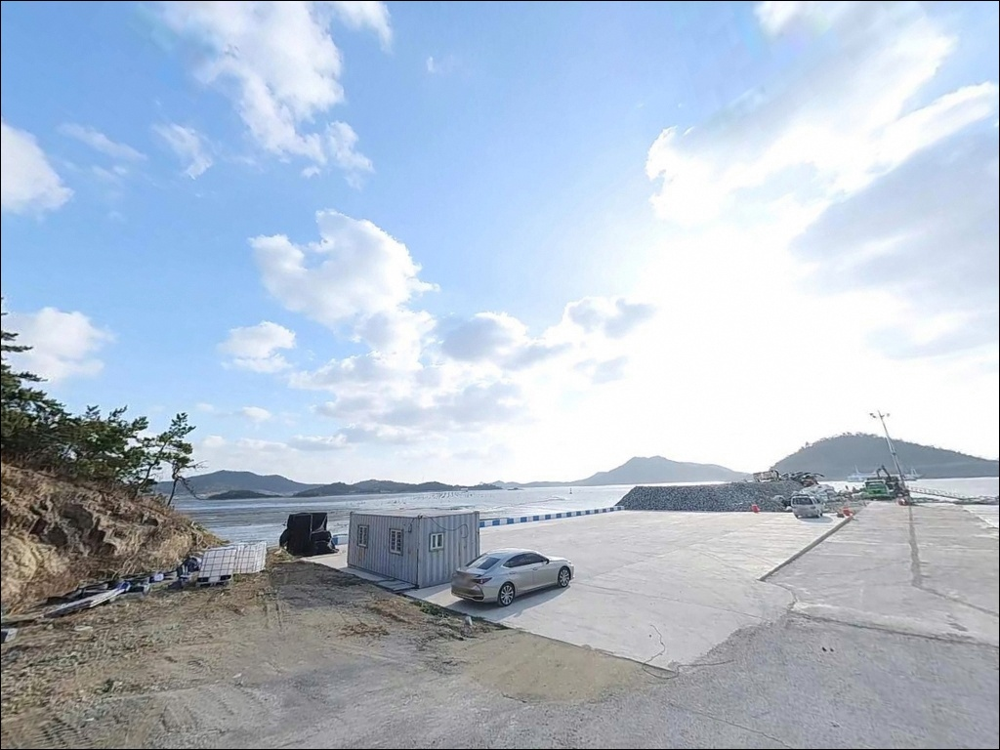
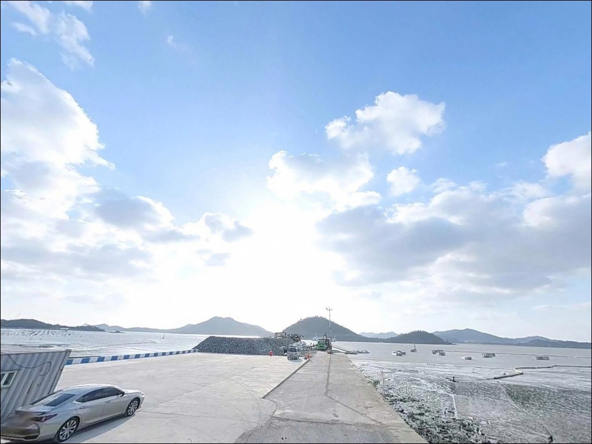
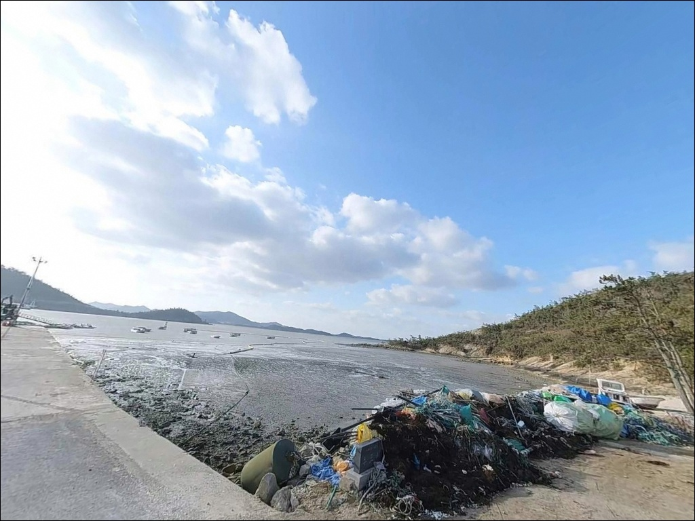
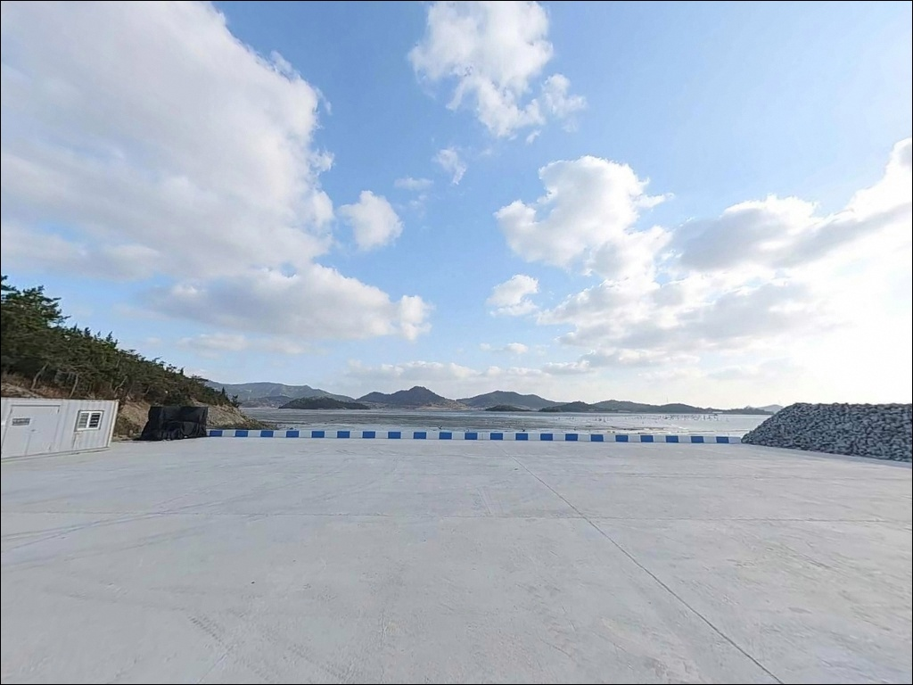
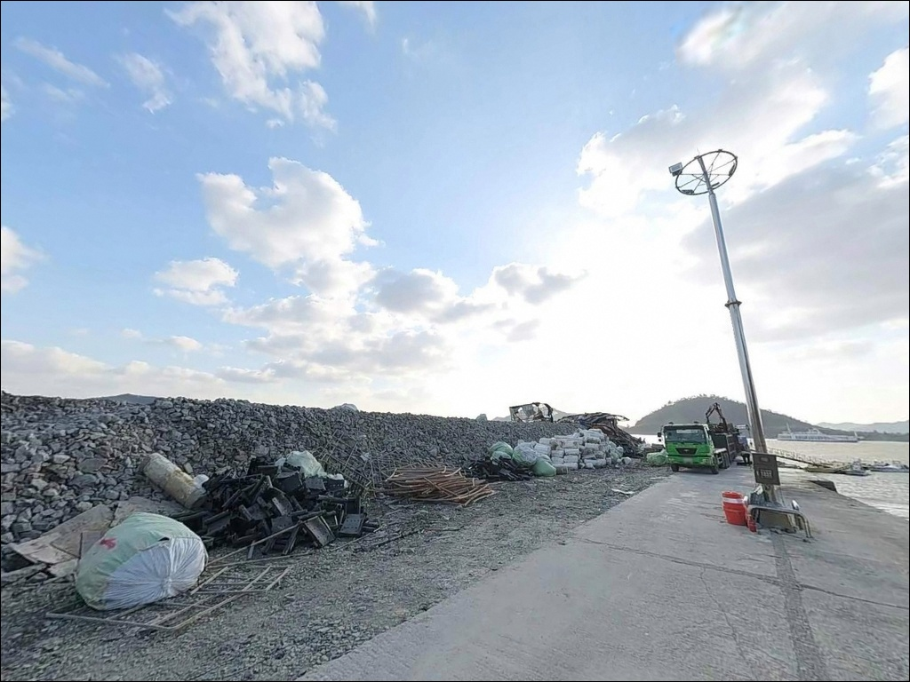
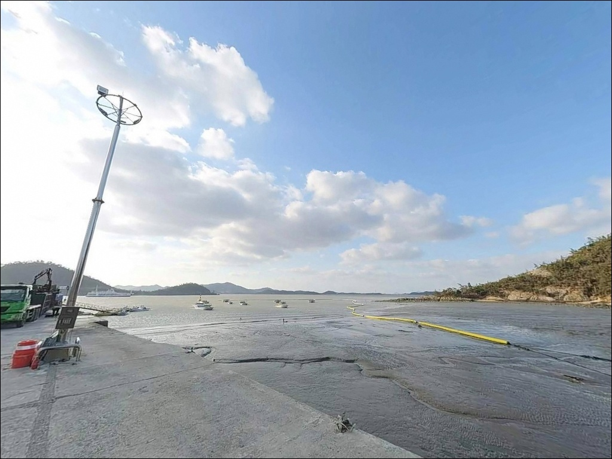
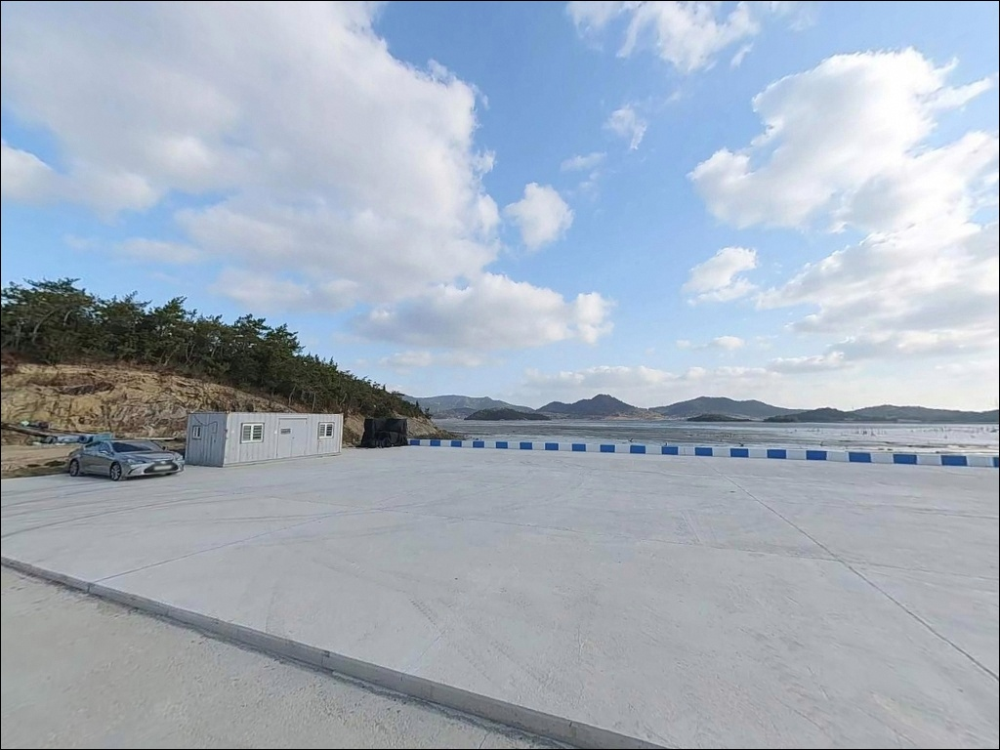
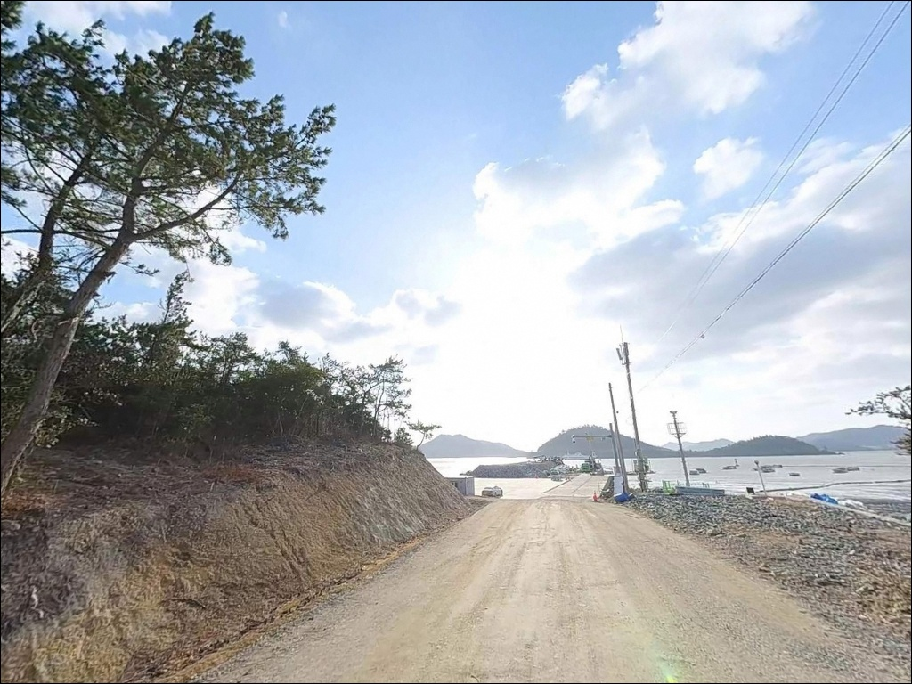

추포항, 전남 신안군 고요함이 매력인 차박, 낚시 감성 장소


추포항
전남 신안군 암태면 수곡리 산 2719-1
물때 확인 없이 추포항에 들어서면
낚시 자리가 아닌 빈 갯벌을 만나게 됩니다.
서해 신안 해역은 조수간만 차가 크고,
간조 전후 수심이 빠르게 낮아지는 구조라
타이밍을 잘못 잡으면 채비를 넣을 자리 자체가 사라집니다.
이 글은 추포항의 진입 환경,
지형 기반 낚시 여건,
물때 판단 기준과 차박 조건에 집중합니다.
조황 단정이나 특정 어종 보장은
이 글의 범위에 포함되지 않습니다.

1. 추포도 진입 동선과 방파제 접근성
추포항이 자리한 추포도는
암태도와 추포대교로 연결된 섬입니다.
육지에서 암태도까지는 2019년 개통된
천사대교를 이용하는 것이 기본 루트이며,
목포 방면에서 출발해 천사대교를 건넌 뒤
암태면 내부 해안 도로를 따라
추포대교를 지나면 추포도로 진입합니다.
암태도 중심부에서 추포도 방향으로 이어지는
해안 도로는 섬 내부 특성상
구간에 따라 폭이 좁아지는 지점이 있습니다.
대형 SUV나 캠핑 장비를 실은 차량이라면
출발 전 진입로를 위성지도로 확인해 두는 편이
불필요한 회차를 줄이는 방법입니다.
항 주변 선착장 앞 공터가
주차 후보로 활용되는 구조입니다.
소형 어항 규모이므로 한꺼번에 많은 차량이
머무르기 어려우며,
어선 이동 동선과 작업 공간을
막지 않는 자리를 먼저 잡는 것이 기본 매너입니다.

2. 차박 환경과 야간 체류 여건
추포도는 민가 밀집도가 낮은 소규모 어촌 지역으로,
야간에 차량 통행이 많지 않습니다.
프라이버시 측면에서는 상대적으로
한적한 환경이 유지되는 편이지만,
선착장 주변 주차 공간이 넉넉하지 않아
차박을 메인으로 계획한다면
현장 공간 여건을 미리 파악해야 합니다.
외항 방향이 서해 쪽으로 열려 있는 구조라
서풍이나 북서풍이 강한 날에는
바람 영향이 직접 미칩니다.
기상 예보를 출발 당일 아침 다시 한 번 확인하고,
강풍 예보가 있는 날은 외항 방향 접근을 삼가는 편이
안전합니다.
가로등 배치가 제한적인 환경이라
야간 낚시와 차박 모두
개인 조명 준비가 필수입니다.
헤드랜턴과 랜턴을 각각 챙기는 것이
어두운 방파제와 갯바위 구간을 이동할 때
기본 안전 조건이 됩니다.


3. 주변 편의시설 및 인프라 현황
추포항 반경 3km 이내에는
확인된 편의시설이 없습니다.
가장 가까운 편의점과 주유소는
암태면 단고리 방면으로 나가야 하며,
도로 기준으로 상당한 거리가 있습니다.
완전 자급 체제로 진입하는 것이 현실적이며,
출발 전 충분한 보급을 마치고 들어가야 합니다.
천사대교를 건넌 뒤
암태면 단고리 일대에는
세븐일레븐 신안암태점과
CU 신안암태점이 확인되어 있습니다.
추포도로 이동하기 전 이 구간에서
식수·얼음·낚시 소품 등 필요한 보급을 먼저 마치는 동선이
효율적입니다.
섬 지역 특성상 응급 상황 발생 시
이동 거리가 길어집니다.
비상약품과 충분한 수분을
출발 전부터 준비해 두는 것이
기본 안전 조건입니다.

4. 물때 하나가 추포항 낚시 성패를 가르는 이유
추포항에서 낚시를 제대로 즐기려면
물때 확인이 모든 준비보다 먼저입니다.
신안 해역은 서해 특성상 조수간만 차가 크고,
초들물에서 중날물 사이 타이밍이
수심과 조류가 함께 살아나는 구간입니다.
바다타임에서 추포도 또는 암태도 기준 물때를 확인하고
출발 시각을 맞추는 것이 기본 전략입니다.
암반 바닥 특성상 밑걸림이 잦으므로
여분 채비를 넉넉하게 챙겨야 합니다.
바늘과 봉돌, 구멍찌 등을
여유분으로 두 배 이상 준비하는 것이
현장에서 낭비 없이 움직이는 방법입니다.
방파제 테트라포트 구간은
표면이 미끄러운 경우가 많습니다.
논슬립 신발과 구명조끼는
갯바위·방파제 낚시에서 기본 안전 장비이며,
야간 입장 시에는 반드시 착용한 상태로
자리를 잡아야 합니다.

5. 지형 기반 낚시 여건 분석
추포항은 소형 방파제가 내항을 감싸는 형태로,
외항 방향은 서해 쪽으로 열려 있습니다.
바닥은 암반으로 이루어져 있으며
수심 5.8~10.0m 범위의 구간이 형성되어 있습니다.
암반 바닥은 우럭·농어 계열이 즐겨 붙는 환경으로,
방파제 끝단과 외항 방향이 핵심 낚시 구간입니다.
방파제 외항 끝단은 조류가 만나는 지점으로,
감성돔·농어 릴찌 자리가 살아나는 구간입니다.
내항과 외항 경계 부근에서는
조류 흐름이 생기면서
찌낚시와 원투낚시 모두
자리를 잡기 좋은 구조 조건이 만들어집니다.
수곡리 돌출부 지형상
외항 방향에서 조류 영향이 커지는 편이며,
사리 전후에는 조류가 빠르게 강해져
채비 컨트롤이 어려워질 수 있습니다.
조류 세기에 따라 봉돌 무게 조절이 필요한 포인트이며,
출조 전 최신 조황은 "추포항 낚시" 또는
"암태도 방파제 낚시"로 꼭 검색해 보시기 바랍니다.


6. 추포항에 어울리는 낚시 스타일
릴찌낚시가 이 포인트 구조에 가장 잘 맞는 스타일입니다.
암반 바닥과 방파제 끝단 외항 쪽 조류 흐름은
감성돔 릴찌 채비가 힘을 쓰는 환경입니다.
초들물 이후 조류가 살아나는 타이밍에
방파제 끝단 외항 방향으로 구멍찌 채비를 흘리는 방식이
기본 공략입니다.
원투낚시도 이 포인트와 잘 어울립니다.
내항과 외항 경계 구간에서 멀리 던진 뒤
바닥층을 노리는 방식이 유효하며,
붕장어·보리멸 계열을 기대해볼 수 있는
지형 조건입니다.
조류가 느려지는 정조 타이밍에 채비를 멀리 보내
바닥을 천천히 탐색하는 것이 효과적입니다.
루어낚시도 시도해볼 만합니다.
방파제 외항 방향과 암반 경계 구간은
우럭·농어가 붙기 좋은 지형 조건입니다.
지그헤드 채비로 암반 주변을 천천히 끌어오거나,
미노우로 표층~중층을 탐색하는 방식이
이 포인트 암반 구조와 잘 맞는 스타일입니다.

7. 대안 포인트와 플랜 B 동선
추포항 조류가 너무 강하거나
간조로 낚시 여건이 떨어진다면
암태도 오도선착장이 첫 번째 대안입니다.
추포항에서 약 9.6km 거리이며,
수심이 상대적으로 안정적이고
다양한 낚시 스타일을 운용하기 좋은 구조입니다.
암태도 북강진 선창도 대안으로
검토할 수 있는 포인트입니다.
추포항에서 약 5.9km 거리로
이동 동선이 비교적 짧습니다.
암태도 익금해변 갯바위 구간도
릴찌낚시와 루어 복수 운용이 가능한 대안으로,
같은 권역 안에서 함께 탐색할 수 있습니다.
차박 환경이 더 안정적인 곳을 원한다면
암태도 신석리 몽돌바다캠핑장이
같은 암태도 내 확인된 캠핑장입니다.
주차와 야박 여건이 추포항보다 안정적이며,
낚시와 차박을 병행하는 일정이라면
이쪽을 베이스캠프로 삼고
추포도를 당일 탐색 포인트로 운용하는 방식이
효율적입니다.

물때와 준비가 갖춰지면
추포항은 달라 보입니다
감성돔 릴찌낚시나 루어로
암반 바닥을 공략하는 낚시인이라면
추포항의 지형 조건은 잘 맞는 구조입니다.
외부 자료가 많지 않아 아직 붐비지 않는
조용한 포인트이며,
직접 발품을 들여 탐색해야 하는
탐방형 포인트이기도 합니다.
반면 물때 계산 없이 간조 전후에 도착하거나,
편의시설을 기대하고 보급 없이 진입하면
낚시를 시작하기 전에
이미 조건이 무너져 있는 상황을 만날 수 있습니다.
물때 확인, 자급 보급, 진입로 사전 점검,
이 세 가지를 갖추고 간다면
신안 다이아몬드 해역 끝자락의
조용한 암반 포인트를 제대로 즐길 수 있습니다.
암반 바닥 조류 속에 릴찌를 흘리고
밤에는 방파제 옆에서 조용히 하룻밤 머무는 것,
추포항이 어울리는 낚시꾼과 차박 여행자의 스타일입니다.